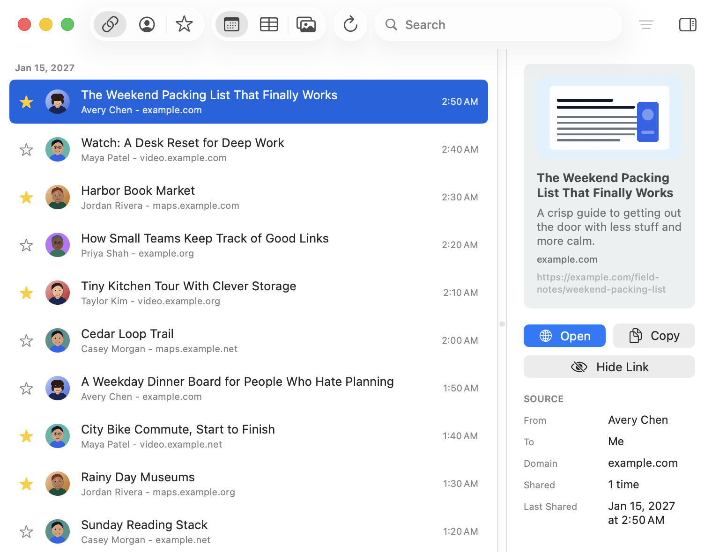

Frequently Asked Questions
Missing Link is for power users so that links are more readable, searchable, and filterable - multiple views, complex filters, or bookmarking links for later.
MacOS (appropriately!) requires your permission before it can read the local Messages database. When asked, select the Messages folder itself, usually ~/Library/Messages. This gives Missing Link access to process messages to grab the links.
No, the main indexing work happens locally on your Mac. Missing Link stores its own local index so the app can search quickly without repeatedly parsing everything from scratch. Some optional link preview / metadata features require network access, but otherwise it's entirely local.
By default, Missing Link uses a privacy-conscious setting: metadata is automatically added for starred links and links from contacts. You can change this in Settings.
Fetching metadata contacts websites. For links from unknown senders, that can be a privacy tradeoff. The default is meant to be useful without being too eager: links you star and links from people in your contacts are treated as more likely to be worth previewing. Additionally, metadata fetching is limited to public HTTPS links and avoids private/local/internal network addresses. HTTP links can still appear in Missing Link and can still be opened manually, but they are not used for metadata fetching.
Contacts access is optional and is used to make results easier to read. If enabled, Missing Link matches phone numbers and email addresses from Messages to names and thumbnail photos in your local Contacts database. But if you choose not to use it, then it'll fall back to showing phone numbers or email addresses.
Starring marks a link as important. They can be filtered and viewed.
Hiding removes a link from normal results without deleting it from Messages. Hidden links stay hidden unless you turn on Show Hidden Links in Settings and unhide them. This is useful for links you do not want cluttering your library.
Missing Link has a setting for links that are no longer present in Messages. You can have them automatically removed, or keep them for 30 Days, 90 Days, 1 Year, 2 Years, or Forever.
It removes Missing Link’s local data, including its saved index, cached previews, preferences, stars, hidden links, metadata attempts, and saved Messages folder permission. It does not delete or modify Messages. After using it, Missing Link will behave like a fresh install and may need Messages access again.
Yes. Missing Link can copy current results as JSON or Markdown. Exports are user-initiated. They are meant for your own use. The app’s export format is sanitized and does not include raw Messages database identifiers.
No. Missing Link is not a Messages backup tool. It creates a local app-owned index of links for search and browsing, but it does not preserve full conversations and should not be treated as a backup of Messages.
A link may be missing if Messages did not store it in a readable form, if the message was deleted, if it was marked as spam/junk, or if the link was filtered out as part of duplicate or preview-cleanup logic. Missing Link tries to capture normal links from Messages, but it can store different message types in different ways making that sometimes tricky.